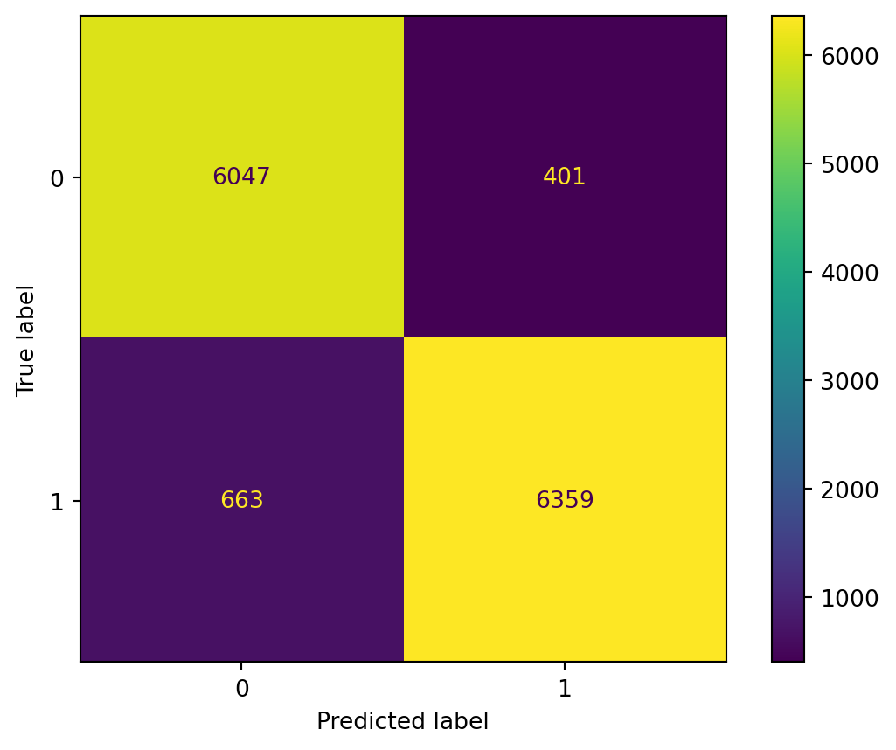

import pandas as pd
import numpy as np
import matplotlib.pyplot as plt
import seaborn as sns
import nltk
from nltk.tokenize import word_tokenize
from nltk.stem.porter import PorterStemmer
from nltk.sentiment import SentimentIntensityAnalyzer
import gensim
from gensim.parsing.preprocessing import STOPWORDS
from gensim.models import CoherenceModel
import importlib
import subprocess
import re
import warnings
import datetime
import itertools
warnings.simplefilter(action='ignore', category=FutureWarning)
from sklearn import svm
from sklearn.model_selection import train_test_split, cross_validate, StratifiedKFold
from sklearn.feature_extraction.text import TfidfVectorizer, CountVectorizer
from sklearn.pipeline import Pipeline
from sklearn.metrics import confusion_matrix, ConfusionMatrixDisplay, classification_report, roc_auc_score, roc_curve, make_scorer, accuracy_score, precision_score, recall_score, f1_score
from sklearn.linear_model import LogisticRegression
from sklearn.calibration import CalibratedClassifierCV
from sklearn.decomposition import LatentDirichletAllocation
from sklearn.utils import resample
from sklearn.preprocessing import StandardScaler
from scipy import stats
from scipy.sparse import hstack
import xgboost as xgb
from textblob import TextBlob
try:
importlib.import_module('textblob')
except ImportError:
subprocess.check_call(['pip', 'install', 'textblob'])
pd.set_option('display.max_columns', 7)Untangling Fact from Falsehood Using NLP
This project was done as part of ISSS609: Text Analytics and Applications. The analysis was performed jointly with Chock Wan Kee, Denise Tan Shi Min, Lim Li Ying, Noel Ng Ser Ying, and Tan Yanni Regine.
Main language/tool: Python
Introduction
The proliferation of fake news is a growing global concern, impacting public opinion, political processes, and trust in media institutions. Fake news is defined as fabricated information that mimics news media content in form but not in organizational process or intent (Lazer, et al., 2018). The spread of misinformation poses significant challenges to foster an informed citizenry as it makes people more susceptible to political misinterpretations (Guess, et al., 2020), thereby increasing the challenge of upholding credibility and integrity of information sources.
Many experiments have been designed and conducted to put Machine Learning techniques to the test in detecting fake from true news. Our project seeks to determine if detection accuracy can be improved with additional features from sentiment analysis. Sentiment analysis discerns the emotional tone of text, thereby providing insights to how information is framed and its potential impact on readers.
The dataset used in this project is the “Fake News Detection” dataset from Kaggle. It contains fake and real news from 31 May 2015 to 19 Feb 2018. The two classes of data are separated into the respective “Fake” and “True” files, which will be combined for our analysis.
Methodology
We adopted a sequential approach to the analysis that is summarized in the flow chart below:
Firstly, the separate “Fake” and “True” files had to be merged into one for analysis. To differentiate between the fake and real news after merging for classification, labels were assigned to each record from the same file, 0 for real news and 1 for fake news. After merging both files, the title and text columns are concatenated to create a corpus for text preprocessing.
Next, preprocessing steps involving tokenization, stop word removal, and stemming are applied on the corpus. It was discovered that some words, such as days of the week and “say” or “said”, appeared in high frequency and did not help to distinguish one document from another. It is reasonable that these words appear frequently in news reports as they provide details on incidents which often include reported speech. In view of the above, we included these words as stop words to be removed from the corpus.
After identifying the best model, additional features such as sentiment analysis scores (including compound score from NLTK’s VADER and subjectivity and polarity scores from TextBlob) were incorporated into the model to evaluate their impact on enhancing the model’s performance. This is due to the fact that sentiment analysis has been shown to be a potentially powerful tool in identifying fake news, as will be elaborated later in the article.
One challenge is the size of the corpus containing more than 40,000 documents. Choosing a model that can work efficiently with this corpus size will be a crucial factor.
Finally, three classification methods are used to find the best performing model in classifying fake news.
The following sections will go into the codes used and describe their functions.
Import Libraries and Datasets
Load Required Packages
Load Dataset
df_fake = pd.read_csv('data/Fake.csv')
df_true = pd.read_csv('data/True.csv')See the Top 5 Rows in Each Dataframe
df_fake.head()| title | text | subject | date | |
|---|---|---|---|---|
| 0 | Donald Trump Sends Out Embarrassing New Year’... | Donald Trump just couldn t wish all Americans ... | News | December 31, 2017 |
| 1 | Drunk Bragging Trump Staffer Started Russian ... | House Intelligence Committee Chairman Devin Nu... | News | December 31, 2017 |
| 2 | Sheriff David Clarke Becomes An Internet Joke... | On Friday, it was revealed that former Milwauk... | News | December 30, 2017 |
| 3 | Trump Is So Obsessed He Even Has Obama’s Name... | On Christmas day, Donald Trump announced that ... | News | December 29, 2017 |
| 4 | Pope Francis Just Called Out Donald Trump Dur... | Pope Francis used his annual Christmas Day mes... | News | December 25, 2017 |
df_true.head()| title | text | subject | date | |
|---|---|---|---|---|
| 0 | As U.S. budget fight looms, Republicans flip t... | WASHINGTON (Reuters) - The head of a conservat... | politicsNews | December 31, 2017 |
| 1 | U.S. military to accept transgender recruits o... | WASHINGTON (Reuters) - Transgender people will... | politicsNews | December 29, 2017 |
| 2 | Senior U.S. Republican senator: 'Let Mr. Muell... | WASHINGTON (Reuters) - The special counsel inv... | politicsNews | December 31, 2017 |
| 3 | FBI Russia probe helped by Australian diplomat... | WASHINGTON (Reuters) - Trump campaign adviser ... | politicsNews | December 30, 2017 |
| 4 | Trump wants Postal Service to charge 'much mor... | SEATTLE/WASHINGTON (Reuters) - President Donal... | politicsNews | December 29, 2017 |
Data Preparation
Inserting column “class” to identify target features
df_fake['class'] = 1
df_true['class'] = 0Merging df_true and df_fake
df_merge = pd.concat([df_true, df_fake], axis = 0)
df_merge.head() | title | text | subject | date | class | |
|---|---|---|---|---|---|
| 0 | As U.S. budget fight looms, Republicans flip t... | WASHINGTON (Reuters) - The head of a conservat... | politicsNews | December 31, 2017 | 0 |
| 1 | U.S. military to accept transgender recruits o... | WASHINGTON (Reuters) - Transgender people will... | politicsNews | December 29, 2017 | 0 |
| 2 | Senior U.S. Republican senator: 'Let Mr. Muell... | WASHINGTON (Reuters) - The special counsel inv... | politicsNews | December 31, 2017 | 0 |
| 3 | FBI Russia probe helped by Australian diplomat... | WASHINGTON (Reuters) - Trump campaign adviser ... | politicsNews | December 30, 2017 | 0 |
| 4 | Trump wants Postal Service to charge 'much mor... | SEATTLE/WASHINGTON (Reuters) - President Donal... | politicsNews | December 29, 2017 | 0 |
Let’s determine the number of articles in the corpus.
print('The number of articles in the corpus is: ', len(df_merge))The number of articles in the corpus is: 44898Combine title and text into one column for later analysis to consider both fields.
df_merge['text'] = df_merge['title'] + df_merge['text']
df_merge.head()| title | text | subject | date | class | |
|---|---|---|---|---|---|
| 0 | As U.S. budget fight looms, Republicans flip t... | As U.S. budget fight looms, Republicans flip t... | politicsNews | December 31, 2017 | 0 |
| 1 | U.S. military to accept transgender recruits o... | U.S. military to accept transgender recruits o... | politicsNews | December 29, 2017 | 0 |
| 2 | Senior U.S. Republican senator: 'Let Mr. Muell... | Senior U.S. Republican senator: 'Let Mr. Muell... | politicsNews | December 31, 2017 | 0 |
| 3 | FBI Russia probe helped by Australian diplomat... | FBI Russia probe helped by Australian diplomat... | politicsNews | December 30, 2017 | 0 |
| 4 | Trump wants Postal Service to charge 'much mor... | Trump wants Postal Service to charge 'much mor... | politicsNews | December 29, 2017 | 0 |
There are columns which we would not need for the purpose of this analysis: title, subject, and date. This can be dropped from the dataframe.
df = df_merge.drop(["title", "subject", "date"], axis = 1)
df.head()| text | class | |
|---|---|---|
| 0 | As U.S. budget fight looms, Republicans flip t... | 0 |
| 1 | U.S. military to accept transgender recruits o... | 0 |
| 2 | Senior U.S. Republican senator: 'Let Mr. Muell... | 0 |
| 3 | FBI Russia probe helped by Australian diplomat... | 0 |
| 4 | Trump wants Postal Service to charge 'much mor... | 0 |
The dataframe rows will be shuffled as during concatenation, the True and Fake classes retained their original location next to each other.
df = df.sample(frac=1, random_state=42).reset_index(drop=True)
df.head()| text | class | |
|---|---|---|
| 0 | BREAKING: GOP Chairman Grassley Has Had Enoug... | 1 |
| 1 | Failed GOP Candidates Remembered In Hilarious... | 1 |
| 2 | Mike Pence’s New DC Neighbors Are HILARIOUSLY... | 1 |
| 3 | California AG pledges to defend birth control ... | 0 |
| 4 | AZ RANCHERS Living On US-Mexico Border Destroy... | 1 |
We can check whether the number of entries in each class is relatively balanced. If they are not, imputation or under-sampling would have to be performed later during machine learning.
sns.countplot(x="class",
data = df)
plt.show()It is possible to see that the number of entries in each class is relatively similar, eliminating the need for manipulation later on.
Text Pre-processing
The text pre-processing steps used in this project are listed below:
Removal of words that appear only in “true” or “fake” news
It can be observed from a visual check of both datasets that certain words and phrases only appear in either data set, while some words appear in both data sets. These words, as shown in the table below, are removed from the corpus as they do not contribute much to distinguish the documents. For example, hyperlink markers such as “www” appears in many articles and provides no value.
Tokenize words and change to lowercase
Next, to standardize the words in the corpus, .lower() is used to change all word cases to lower case. Following which, the text is tokenized using NLTK’s word_tokenize() function. This will treat each word as a separate component.
Remove stop words
Next, stop words are removed from the text. Stop words are words found in text there are deemed unlikely to be useful in information retrieval. Stop words can be understood as words necessary in the use of language but does not provide value for the analysis. Some common stop words are “the”, “is”, “are”. The STOPWORDS library from Gensim is used for this project as it contains the highest number of stop words (337 stop words).
Stemming
Next, stemming is applied on the remaining words to normalize text by obtaining only the stem of words. Stemming reduces the variations of a word down to single root. For example, “cats” would simply become “cat”. This is done using the .stem() function from the PorterStemmer module under NLTK.
Remove punctuation
Next, we remove all punctuation marks that are retained in the list of words after tokenization. This is achieved by using the .isalpha() function to retain only words that contain only alphabetic characters. Besides removing punctuation points, we can achieve a secondary advantage of removing numeric and special characters that may not contribute meaningfully to the analysis.
Refining pre-processing steps
Finally, after an initial round of pre-processing, it was observed that the pre-processed text contained a high frequency of the following: words that are single characters, days of the week, and “says” or “said”. Days of the week and “says” or “said” are words commonly occurring in news articles. Hence, the pre-processing step is refined to include a custom list of stop words (each day of the week, “says”, “said”), and to only retain words that are longer than one character.
The code chunk below will perform the described pre-processing steps.
## A function is defined to perform pre-processing steps for easier usage later on
custom_stop_word = ['monday', 'tuesday', 'wednesday', 'thursday', 'friday', 'saturday', 'sunday', 'said', 'says', 's', 't']
stop_words = STOPWORDS.union(set(custom_stop_word)) # setting the stopwords
stemmer = PorterStemmer() # setting the stemmer
def preprocess_tokens(text):
words = re.sub('Reuters', '', text) # removing the word Reuters as it appears in all the real news
words = re.sub('https?:\S+|www\.\S+', ' ', words) # remove URLs that begin with 'https' or 'www'
words = re.sub('bit\.ly\S+', ' ', words) # remove URLS that begin with 'bit.ly' - only appears in true news
words = re.sub('pic\.twitter\.com\S+', ' ', words) # remove URLs that begin with 'pic.twitter.com' - only appears in fake news
words = word_tokenize(words.lower()) # convert text to lowercase & split into word tokens
words = [word for word in words if not word in stop_words] # removing the stop words
words = [stemmer.stem(word) for word in words] # stemming the words
words = [word for word in words if word.isalpha()] # removing punctuation
words = [word for word in words if len(word) > 1] # remove single character words
return wordsThe preprrocess_token() function can now be applied onto the text column of our dataframe.
df['text_preprocessed'] = df["text"].apply(preprocess_tokens)
df.head()| text | class | text_preprocessed | |
|---|---|---|---|
| 0 | BREAKING: GOP Chairman Grassley Has Had Enoug... | 1 | [break, gop, chairman, grassley, demand, trump... |
| 1 | Failed GOP Candidates Remembered In Hilarious... | 1 | [fail, gop, candid, rememb, hilari, mock, eulo... |
| 2 | Mike Pence’s New DC Neighbors Are HILARIOUSLY... | 1 | [mike, penc, new, dc, neighbor, hilari, troll,... |
| 3 | California AG pledges to defend birth control ... | 0 | [california, ag, pledg, defend, birth, control... |
| 4 | AZ RANCHERS Living On US-Mexico Border Destroy... | 1 | [az, rancher, live, border, destroy, nanci, pe... |
Let’s determine the distribution of lengths of each token using a plot.
# Find the length of each list of preprocessed tokens
lengths = [len(tokens) for tokens in df['text_preprocessed']]
# Plot the distribution of the length of the list of preprocessed tokens
plt.figure(figsize=(8, 6))
sns.histplot(lengths, bins=30, color='skyblue', edgecolor='black', kde=False)
plt.title('Distribution of the Length of Preprocessed Tokens')
plt.xlabel('Length of Preprocessed Tokens')
plt.ylabel('Frequency')
plt.show()
Alternatively, it is also possible to determine the top 20 most common tokens in the entire corpus. Due to the large number of articles in the corpus, we can sample just the first 1,000 articles in order to get a glimpse of the top 20 most common tokens.
first1000 = list(itertools.chain.from_iterable(df['text_preprocessed'][:1000]))
print('most frequent tokens in first 1000 articles \n', nltk.FreqDist(first1000).most_common(20))most frequent tokens in first 1000 articles
[('trump', 3216), ('presid', 1328), ('state', 1272), ('peopl', 891), ('republican', 808), ('new', 693), ('obama', 692), ('year', 663), ('democrat', 651), ('like', 643), ('hous', 641), ('donald', 627), ('elect', 611), ('white', 610), ('support', 597), ('nation', 583), ('clinton', 572), ('parti', 572), ('report', 563), ('vote', 559)]We can see that topics related to United States (U.S) politics dominate the top tokens. These include tokens related to the U.S presidents such as Donald Trump or Barack Obama.
Document Classification - Baseline
As the project aims to understand the impact of using sentiment analysis to improve the accuracy of fake news classification using machine learning techniques, a baseline classification model is trained using only the processed data that excludes additional features.
Two model evaluation methods are explored in this project. The Train-Test Split Method is used and validated using the evaluation metrics, the K-Fold Cross Validation Method is used. As mentioned in the previous section, three classification models are employed in this project: XGBoost, SVM, and Logistic Regression.
First, the processed data is split into 70% for training and 30% for testing. This ratio is decided as it provides sufficient data to train the classification models (31,429 records), and adequate data to evaluate the performance of the models (13,469 records). Furthermore, this split also balances the computational resources required to train the models and leaves enough data for K-Fold Cross Validation.
Next, the processed data is vectorized using the TfidfVectorizer, which converts raw strings into a matrix of Term Frequency-Inverse Document Frequency (TF-IDF) features. This allows a higher weightage to be assigned to words that occur less frequently in the corpus as these words are more discriminative. The split X_train data is vectorized using the .fit_transform() function while the X_test data is vectorized using the .transform() function.
Next, we define a function to return the evaluation results for each model. The function makes predictions using the test data and calculates the evaluation metrics. The metrics are calculated using the classification_report() function from sklearn and it includes the precision, recall, f1-score, and support. The function also generates the confusion matrix created using the confusion_matrix() function from sklearn and the AUC-ROC curve, which plots true positive rate against false positive rate. This function can be called with each model to evaluate them separately.
Using the train-test split method alone may introduce bias that is an over- or underestimation of the performance of a model. K-fold cross-validation can be used to conduct a systematic evaluation of the model (Kohavi, 1995).
To achieve this, we wrote another function to evaluate each model using the k-fold evaluation method, where k = 10 in this project. This is implemented using the StratifiedKFold function from sklearn. This function splits the entire vectorized data set into 10 equal-sized parts with approximately similar proportions of class 0 and class 1 data. Next, we evaluated each model 10 times, each time using one fold as the validation set, and the average of the performance over 10 rounds of training and validation is used as the overall performance metric. This is achieved using the cross_validate() function from sklearn, and the precision, recall, f1-score, and support scores are created using the make_scorer() function from sklearn.
After obtaining the results of the baseline model, the data frame is fitted with features from the subsequent analyses – sentiment analysis using VADER and TextBlob. The train-test split method and k-fold cross-validation are applied to the corpus with the addition of the following features:
Compound score from VADER
Polarity and Subjectivity scores from TextBlob
Compound score from VADER, and Polarity and Subjectivity scores from TextBlob
But first, let’s consider the performance of a simple baseline solution without any additional features. This can be performed using the code chunks below.
Simple Train - Test Model Evaluation
In this section, our baseline solution will only split the data into a train and test set in order to evaluate the performance of each model.
First, we define variables to store the independent variable, or the text, and the dependent variable, or the class of Fake or True.
X = df['text_preprocessed']
y = df['class']Next, we split the data into a train and test set in order to make sure the models can be trained and evaluated on separate data sets, or in other words, to make sure that each model is not being tested on data it has seen during training.
X_train, X_test, y_train, y_test = train_test_split(X, y, test_size=0.3, shuffle=True, random_state=42)Because the TfidfVectorizer will not work with word tokens, our tokens would need to be passed through a dummy function first. Essentially, the TfidfVectorizer has its own tokenizer argument meant to tokenize input strings. By inputing our dummy function as a tokenizer, we can use the tokens we have already created.
def dummy(tokens):
return tokens
vectorizer = TfidfVectorizer(tokenizer=dummy,
preprocessor=dummy,
token_pattern=None,
ngram_range = (1,1),
min_df = 0.1)
X_train = vectorizer.fit_transform(X_train)
X_test = vectorizer.transform(X_test)Next, we can create a dictionary of models we would like to evaluate. For this analysis, we will use three models discussed during the course: XGBoost, Support Vector Machine (SVM), and Logistic Regression.
models = {
'XGBoost': xgb.XGBClassifier(),
'SVM': CalibratedClassifierCV(svm.LinearSVC()),
'LogReg': LogisticRegression(class_weight='balanced')
}A function called model_evaluate is defined in order to evaluate each model and return evaluations in terms of the visualization of a confusion matrix and classification report of different metrics (F1, accuracy, precision, recall). Additionally, an ROC curve is drawn to visually evaluate the performance of the models.
model_evaluate will take each model from the pre-defined dictionary, fit the training data in X_test to it, and then evaluate its performance on the test corpus in X_test.
def model_evaluate(models, model_name):
# Create the pipeline
pipeline = Pipeline(steps=[
('model', models[model_name])
])
# Fit the pipeline on the training data
pipeline.fit(X_train, y_train)
# Make predictions on the test data
y_pred = pipeline.predict(X_test)
# Calculate evaluation metrics
print('Summary report for {}'.format(model_name))
print("Classification Report:")
print(classification_report(y_test, y_pred))
# Confusion Matrix
print("Confusion Matrix:")
cm = confusion_matrix(y_test, y_pred)
cmplot = ConfusionMatrixDisplay(cm)
cmplot.plot()
plt.show()
# AUC-ROC Curve
print("AUC-ROC Curve:")
y_pred_proba = pipeline.predict_proba(X_test)[:, 1]
auc_roc = roc_auc_score(y_test, y_pred_proba)
fpr, tpr, _ = roc_curve(y_test, y_pred_proba)
# Plot the ROC curve
plt.figure(figsize=(8, 6))
plt.plot(fpr, tpr, label='ROC curve (area = %0.4f)' % auc_roc)
plt.plot([0, 1], [0, 1], 'k--')
plt.xlim([0.0, 1.0])
plt.ylim([0.0, 1.05])
plt.xlabel('False Positive Rate')
plt.ylabel('True Positive Rate')
plt.title('Receiver Operating Characteristic')
plt.legend(loc="lower right")
plt.show()The evaluation of the XGBoost model:
model_evaluate(models,'XGBoost')Summary report for XGBoost
Classification Report:
precision recall f1-score support
0 0.96 0.96 0.96 6448
1 0.96 0.96 0.96 7022
accuracy 0.96 13470
macro avg 0.96 0.96 0.96 13470
weighted avg 0.96 0.96 0.96 13470
Confusion Matrix:
AUC-ROC Curve:The evaluation of the SVM model:
model_evaluate(models,'SVM')Summary report for SVM
Classification Report:
precision recall f1-score support
0 0.91 0.93 0.92 6448
1 0.94 0.91 0.93 7022
accuracy 0.92 13470
macro avg 0.92 0.92 0.92 13470
weighted avg 0.92 0.92 0.92 13470
Confusion Matrix:
AUC-ROC Curve:
The evaluation of the Logistic Regression model:
model_evaluate(models,'LogReg')Summary report for LogReg
Classification Report:
precision recall f1-score support
0 0.90 0.94 0.92 6448
1 0.94 0.91 0.92 7022
accuracy 0.92 13470
macro avg 0.92 0.92 0.92 13470
weighted avg 0.92 0.92 0.92 13470
Confusion Matrix:
AUC-ROC Curve:

Based on the evaluation of the three models, the XGBoost model can be considered to be the most effective as it achieved the highest F1-score and the highest accuracy of 96%. In order to improve the rigor of our machine learning, K-fold Cross Validation can be performed to further evaluate each of the model.
K-fold Cross Validation Method
It is possible to tweak our functions to perform StratifiedKFold validation instead of a simple train-test split.
scoring = {'accuracy' : make_scorer(accuracy_score),
'precision' : make_scorer(precision_score),
'recall' : make_scorer(recall_score),
'f1_score' : make_scorer(f1_score)}
def model_evaluate_kfold(models, model_name):
pipeline = Pipeline(steps=[
('vectorizer', TfidfVectorizer(tokenizer=dummy, preprocessor=dummy, token_pattern=None, ngram_range=(1, 1), min_df=0.1)),
('model', models[model_name])
])
# Use stratified k-fold cross-validation
cv = StratifiedKFold(n_splits=10, shuffle=True, random_state=42)
# Perform cross-validation
scores = cross_validate(pipeline, X, y, cv=cv, scoring=scoring)
print(f"Cross-validation scores for {model_name}:")
print(f"Accuracy: {scores['test_accuracy']}")
print(f"Precision: {scores['test_precision'].mean()}")
print(f"Recall: {scores['test_recall'].mean()}")
print(f"F1-score: {scores['test_f1_score'].mean()}")
print(f"Mean accuracy: {scores['test_accuracy'].mean()}")
print(f"Standard deviation: {scores['test_accuracy'].std()}")Now, it is possible to evaluate our models, starting with XGBoost. Due to the nature of k-fold validation, the process would take longer than simple train-test evaluation:
model_evaluate_kfold(models,'XGBoost')Cross-validation scores for XGBoost:
Accuracy: [0.96592428 0.96436526 0.96013363 0.96035635 0.96124722 0.96792873
0.96681514 0.9701559 0.96435732 0.96435732]
Precision: 0.9645687925543933
Recall: 0.9678037629554204
F1-score: 0.9661795229357942
Mean accuracy: 0.9645641139117099
Standard deviation: 0.0031299726702493265It is possible to see that the Accuracy and F1-score improved by almost one percentage point when k-fold validation is performed instead of a simple train-test training.
Let’s continue to evaluate the SVM and Logistic Regression models.
model_evaluate_kfold(models,'SVM')Cross-validation scores for SVM:
Accuracy: [0.9247216 0.92249443 0.92672606 0.91737194 0.9247216 0.93006682
0.92227171 0.922049 0.92537313 0.91713076]
Precision: 0.9358082510351204
Recall: 0.916187521893038
F1-score: 0.9258872932004186
Mean accuracy: 0.9232927061001874
Standard deviation: 0.0037727925841135918model_evaluate_kfold(models,'LogReg')Cross-validation scores for LogReg:
Accuracy: [0.922049 0.92227171 0.92583519 0.91915367 0.92405345 0.92806236
0.91937639 0.91982183 0.92269993 0.91735353]
Precision: 0.9404459114087015
Recall: 0.9085218038340285
F1-score: 0.9242044200936856
Mean accuracy: 0.9220677072040985
Standard deviation: 0.0031227689149698145It is possible to detect a slight increase in each evaluation metric for the three models. Moving forward, it can be determined that XGBoost and k-fold cross validation can be used for further experimentation. The baseline results using XGBoost can be stored for later comparison.
pipeline = Pipeline(steps=[
('vectorizer', TfidfVectorizer(tokenizer=dummy, preprocessor=dummy, token_pattern=None, ngram_range=(1, 1), min_df=0.1)),
('model', models['XGBoost'])
])
# Use stratified k-fold cross-validation
cv = StratifiedKFold(n_splits=10, shuffle=True, random_state=42)
# Perform cross-validation
scores = cross_validate(pipeline, X, y, cv=cv, scoring=scoring)
scores_baseline = [scores['test_f1_score'].mean(), scores['test_accuracy'].mean()]Following the determination of a model and evaluation method, Sentiment Analysis can be performed in order to understand the sentiments of fake news versus real news and to potentially create new features for fake news detection with machine learning.
Sentiment Analysis
Sentiment analysis, or opinion mining, aims to identify the emotional pattern within written text. By conducting sentiment analysis, the sentiment, attitudes, and emotions expressed by a piece of text can be determined (Liu, 2020). Such analysis is particularly relevant to the fake news detection as targeting emotions and provoking an emotional response are the main vectors of effectiveness and spread for fraudulent information (Bakir & McStay, 2018; Horner, et al., 2021). In addition, due to the prominent role that sentiments play in fake news, multiple studies have found that by including sentiment analysis, the performance of a fake news classifier can be improved (Ajao et al., 2019; Alonso et al., 2021; Zhang et al., 2021).
In this project, the goal of sentiment analysis is two-fold. First, sentiment analysis is an objective in and of itself, allowing the study to capture any emotional disparity between fake and genuine news and describe the usage of emotions in fake news. Second, the results of sentiment analysis can serve as new features for document classification, potentially improving its performance. We utilized two of the most popular Python packages, NLTK and TextBlob. However, it is important to note that a clear drawback of any sentiment analysis task based on existing dictionaries will be that the context of the dictionary might not match with the context of the current corpus.
For the purpose of this project, sentiment analysis will be performed using two libraries, NLTK’s VADER and TextBlob.
VADER
NLTK is a powerful tool for natural language processing, including classifiers and sentiment lexicons for sentiment analysis. It works with many text analytics tasks, provides users with a pretrained lexicon and rule-based sentiment analyzer called Valence Aware Dictionary and sEntiment Reasoner (VADER) (Mogyorosi, n.d.). The VADER analyzer uses the vader_lexicon developed by C.J. Hutto and Eric Gilbert, which measures a sentiment intensity score from words, phrases and emojis, and based on their emotional content, from negative to positive. This vader_lexicon can be applied to a piece of written text using NLTK’s SentimentIntensityAnalyzer’s polarity_score() function. SentimentIntensityAnalyzer can be applied to whole sentences instead of tokenized text. However, we note that VADER was trained specifically for social media data to handle complex language sentiments, which may not be completely applicable to fake news.
As the VADER lexicon can be applied directly to text using the SentimentIntensityAnalyzer(), polarity scores for each document in the corpus can be generated by applying .polarity_score() on each record of the processed text dataframe, df. Four score types can be generated from .polarity_score(), and we store each score in one newly created column in df:
Compound: overall sentiment score between -1 to 1
Negative: negative sentiment score between 0 to 1
Neutral: neutral sentiment score between 0 to 1
Positive: positive sentiment score between 0 to 1
The compound score is used as a feature in the classification model as it represents the overall sentiment of each document. The compound score is the sum of the valence scores of each word in the lexicon, normalized to be between -1 and +1 (Swarnkar, 2020).
First, we load the SentimentIntensityAnalyzer into a variable.
sen_ana = SentimentIntensityAnalyzer()Let’s test how the results of the analyzer are displayed.
print(sen_ana.polarity_scores('I love quiz'))
print(sen_ana.polarity_scores('I hate quiz')){'neg': 0.0, 'neu': 0.192, 'pos': 0.808, 'compound': 0.6369}
{'neg': 0.787, 'neu': 0.213, 'pos': 0.0, 'compound': -0.5719}We can see that the first statement is rated to be very positive while the second statement is considered very negative, which makes sense with a cursory inspection.
Instead of having all four scores combined as above, it would be easier for analysis if they’re stored in separate columns. To do so, we can assign each of the score to a new column in the data frame.
df['nltk_compound'] = df['text'].apply(lambda x: sen_ana.polarity_scores(x)['compound'])
df['nltk_neg'] = df['text'].apply(lambda x: sen_ana.polarity_scores(x)['neg'])
df['nltk_neu'] = df['text'].apply(lambda x: sen_ana.polarity_scores(x)['neu'])
df['nltk_pos'] = df['text'].apply(lambda x: sen_ana.polarity_scores(x)['pos'])It is now possible to see the average sentiment scores by class of articles.
df.groupby('class')[['nltk_neg','nltk_neu','nltk_pos','nltk_compound']].mean()| nltk_neg | nltk_neu | nltk_pos | nltk_compound | |
|---|---|---|---|---|
| class | ||||
| 0 | 0.078701 | 0.839465 | 0.081833 | 0.055346 |
| 1 | 0.101657 | 0.805650 | 0.092697 | -0.109791 |
It can be observed that the sentiment differences between the two classes of fake and true news are not significantly divergent based on their mean scores. A visualization might help to further elucidate any potential differences.
fig, axs = plt.subplots(2, 2, figsize=(12, 8))
sns.histplot(df, x="nltk_neg", hue="class", stat="count",ax=axs[0, 0])
sns.histplot(df, x="nltk_neu", hue="class", stat="count",ax=axs[0, 1])
sns.histplot(df, x="nltk_pos", hue="class", stat="count",ax=axs[1, 0])
sns.histplot(df, x="nltk_compound", hue="class", stat="count",ax=axs[1, 1])
plt.tight_layout()
plt.show()TextBlob
TextBlob is a user-friendly library built on NLTK library, allowing users to easily analyze a text corpus. It is more oriented towards user reviews and based on the “pattern” library, which contains high frequency adjectives in reviews. In addition to a customizable library of adjectives, TextBlob also provides a library created through machine learning, namely a Naïve Bayes Classifier model to classify text as positive, negative, or neutral. This library applied a machine-learning model on a corpus of movie reviews and score rating to derive the ratings of words (Loria, 2020).
The TextBlob().sentiment function is applied directly to each record of the processed text dataframe, df. Two score types are generated from this function, and each is stored in one newly created column in df:
Polarity: measures negative or positive sentiment between -1 and 1, with -1 defined as a negative sentiment and 1 defined as a positive sentiment.
Subjectivity: quantifies the amount of personal opinion and factual information contained in the text between 0 and 1. Higher subjectivity means that the text contains personal opinion than facts
Let’s see a demonstration of TextBlob in Python.
texts = ['I love quiz', 'I hate quiz']
# Create TextBlob objects with the text
# Analyze sentiments and print
for text in texts:
sentiment = TextBlob(text).sentiment
print(f"Sentiment for '{text}': {sentiment}")Sentiment for 'I love quiz': Sentiment(polarity=0.5, subjectivity=0.6)
Sentiment for 'I hate quiz': Sentiment(polarity=-0.8, subjectivity=0.9)Similar to VADER, TextBlob identified the first statement as having a positive polarity score while the second as having a negative polarity score. It is important to note that even though a cursory examination shows both statements to be equally subjective, TextBlob indicates that one is more subjective than the other.
TextBlob can be applied to our corpus and the resulting scores can be stored in their own respective columns.
df['textblob_sentiment'] = df['text'].apply(lambda x: TextBlob(x).sentiment)df['textblob_polarity'] = df['textblob_sentiment'].apply(lambda x: x.polarity)
df['textblob_subjectivity'] = df['textblob_sentiment'].apply(lambda x: x.subjectivity)Next, the mean polarity and subjectivity scores from TextBlob can be calculated.
sentiment_means = df.groupby('class')[['textblob_polarity', 'textblob_subjectivity']].mean()
print(sentiment_means) textblob_polarity textblob_subjectivity
class
0 0.053636 0.360700
1 0.056655 0.452103Once again, the difference between the Fake and True news classes do not seem to be significant. It might be useful to visualize the distribution of scores in order to confirm this observation.
fig, axs = plt.subplots(1, 2, figsize=(12, 8))
sns.histplot(df, x="textblob_polarity", hue="class", stat="count", ax = axs[0])
sns.histplot(df, x="textblob_subjectivity", hue="class", stat="count", ax = axs[1])
plt.tight_layout()
plt.show()Let’s combine all the scores into one table for easier comparison.
nltk_sentiment = df.groupby('class')[['nltk_neg','nltk_neu','nltk_pos','nltk_compound']].mean()
textblob_sentiment = df.groupby('class')[['textblob_polarity', 'textblob_subjectivity']].mean()
summary_table = pd.concat([nltk_sentiment,textblob_sentiment],axis = 1)
summary_table.index = ['True','Fake']
summary_table| nltk_neg | nltk_neu | nltk_pos | nltk_compound | textblob_polarity | textblob_subjectivity | |
|---|---|---|---|---|---|---|
| True | 0.078701 | 0.839465 | 0.081833 | 0.055346 | 0.053636 | 0.360700 |
| Fake | 0.101657 | 0.805650 | 0.092697 | -0.109791 | 0.056655 | 0.452103 |
It can be seen that Fake News have an NLTK Negative mean score closer to –1 (0.101657), indicating that Fake News articles contain more words linked to negative emotions than real true news. However, if TextBlob scores are considered, the Polarity score for True News is slightly smaller, indicating that True News is more negative. Yet, these scores are so similar that it might not indicate a meaningful difference. At the same time, it is possible that Fake News, in general, contain more emotions, either negative or positive, compared to True News. This is reflected in Fake News higher score for NLTK Positive Sentiment (0.092697) compared to True News (0.081833). By encompassing both more negative and positive emotions, the mean TextBlob Polarity score for Fake News can be normalized.
On the other hand, the Subjectivity scores exhibit a larger difference between Fake (0.452103) and True News (0.3607), reflecting the potential for Fake News to contain more opinions than facts compared to True News. Histograms visualizing the distribution difference between True and Fake news can be referenced in the Appendix.
Because a difference seems to exist between True News and Fake News for different sentiment categories, the idea that sentiment scores can be added as a feature for the classification task is further reinforced.
In the following section, the document classification model using XGBoost and k-fold cross validation will be refitted to a set of features including the vectorized text of the corpus as well as the compound sentiment scores from NLTK (Compound Score) and TextBlob (Polarity Score) and subjectivity score from TextBlob (Subjectivity Score). Each of these feature will be added sequentially, then combined together to discern their effect on model performance.
Document Classification with Sentiment Analysis
Document Classification with Sentiment Analysis (NLTK VADER)
Firstly, we can perform document classification using NLTK’s compound score with XGBoost and k-fold cross validation.
Only one step is added to the process, which is to use hstack from numpy in order to stack the features column wise after vectorization of text features.
# Define the dependent and independent variables
x = df['text_preprocessed']
x_sentiment_compound = df['nltk_compound'].values.reshape(-1,1)
y = df['class']# Create features with compound sentiment score
def dummy(tokens):
return tokens
vectorizer = TfidfVectorizer(tokenizer=dummy,
preprocessor=dummy,
token_pattern=None,
ngram_range=(1, 2),
min_df=0.1)
x_feature = vectorizer.fit_transform(x)
x_compound = hstack((x_feature,x_sentiment_compound))scoring = {'accuracy' : make_scorer(accuracy_score),
'precision' : make_scorer(precision_score),
'recall' : make_scorer(recall_score),
'f1_score' : make_scorer(f1_score)}
model = xgb.XGBClassifier()
# Use stratified k-fold cross-validation
cv = StratifiedKFold(n_splits=10, shuffle=True, random_state=42)
# Perform cross-validation
scores = cross_validate(model, x_compound, y, cv=cv, scoring=scoring)
scores_nltk = [scores['test_f1_score'].mean(),scores['test_accuracy'].mean()]
print(f"Cross-validation scores for XGBoost:")
print(f"Accuracy: {scores['test_accuracy']}")
print(f"Precision: {scores['test_precision'].mean()}")
print(f"Recall: {scores['test_recall'].mean()}")
print(f"F1-score: {scores['test_f1_score'].mean()}")
print(f"Mean accuracy: {scores['test_accuracy'].mean()}")
print(f"Standard deviation: {scores['test_accuracy'].std()}")Cross-validation scores for XGBoost:
Accuracy: [0.96525612 0.96659243 0.96481069 0.95924276 0.96458797 0.97238307
0.96859688 0.97238307 0.96680775 0.96658499]
Precision: 0.9668479660630778
Recall: 0.9696350362581343
F1-score: 0.9682334814359199
Mean accuracy: 0.9667245744485035
Standard deviation: 0.0036598976506881397It can be observed that the F1 score and mean accuracy both demonstrate a marginal increase of around 0.01%, showing that adding features related to sentiment analysis could possibly make a difference. The next section will explore the use of TextBlob’s sentiment and subjectivity scores as features and the combined sets of NLTK and TextBlob features.
Document Classification with Sentiment Analysis (TextBlob)
# Define the dependent and independent variables
x = df['text_preprocessed']
x_sentiment_polarity = df['textblob_polarity'].values.reshape(-1,1)
x_sentiment_subjectivity = df['textblob_subjectivity'].values.reshape(-1,1)
y = df['class']# Create features with polarity and subjectivity sentiment score
def dummy(tokens):
return tokens
vectorizer = TfidfVectorizer(tokenizer=dummy, preprocessor=dummy, token_pattern=None, ngram_range=(1, 2), min_df=0.1)
x_feature = vectorizer.fit_transform(x)
x_pol_sub = hstack((x_feature, x_sentiment_polarity, x_sentiment_subjectivity))scoring = {'accuracy' : make_scorer(accuracy_score),
'precision' : make_scorer(precision_score),
'recall' : make_scorer(recall_score),
'f1_score' : make_scorer(f1_score)}
model = xgb.XGBClassifier()
# Use stratified k-fold cross-validation
cv = StratifiedKFold(n_splits=10, shuffle=True, random_state=42)
# Perform cross-validation
scores = cross_validate(model, x_pol_sub, y, cv=cv, scoring=scoring)
scores_textblob = [scores['test_f1_score'].mean(),scores['test_accuracy'].mean()]
print(f"Cross-validation scores for XGBoost:")
print(f"Accuracy: {scores['test_accuracy']}")
print(f"Precision: {scores['test_precision'].mean()}")
print(f"Recall: {scores['test_recall'].mean()}")
print(f"F1-score: {scores['test_f1_score'].mean()}")
print(f"Mean accuracy: {scores['test_accuracy'].mean()}")
print(f"Standard deviation: {scores['test_accuracy'].std()}")Cross-validation scores for XGBoost:
Accuracy: [0.9674833 0.97060134 0.96035635 0.96213808 0.96592428 0.9714922
0.96815145 0.97349666 0.97037202 0.96858989]
Precision: 0.9672716036051199
Recall: 0.9714239558244728
F1-score: 0.9693375411244309
Mean accuracy: 0.9678605559444741
Standard deviation: 0.003903097924174063Document Classification with Sentiment Analysis (NLTK VADER and TextBlob)
# Define the dependent and independent variables
x = df['text_preprocessed']
x_sentiment_compound = df['nltk_compound'].values.reshape(-1,1)
x_sentiment_polarity = df['textblob_polarity'].values.reshape(-1,1)
x_sentiment_subjectivity = df['textblob_subjectivity'].values.reshape(-1,1)
y = df['class']# Create features with compound, polarity, subjecctivity scores
def dummy(tokens):
return tokens
vectorizer = TfidfVectorizer(tokenizer=dummy, preprocessor=dummy, token_pattern=None, ngram_range=(1, 2), min_df=0.1)
x_feature = vectorizer.fit_transform(x)
x_combined = hstack((x_feature, x_sentiment_compound, x_sentiment_polarity, x_sentiment_subjectivity))scoring = {'accuracy' : make_scorer(accuracy_score),
'precision' : make_scorer(precision_score),
'recall' : make_scorer(recall_score),
'f1_score' : make_scorer(f1_score)}
model = xgb.XGBClassifier()
# Use stratified k-fold cross-validation
cv = StratifiedKFold(n_splits=10, shuffle=True, random_state=42)
# Perform cross-validation
scores = cross_validate(model, x_combined, y, cv=cv, scoring=scoring)
scores_nltk_textblob = [scores['test_f1_score'].mean(),scores['test_accuracy'].mean()]
print(f"Cross-validation scores for XGBoost:")
print(f"Accuracy: {scores['test_accuracy']}")
print(f"Precision: {scores['test_precision'].mean()}")
print(f"Recall: {scores['test_recall'].mean()}")
print(f"F1-score: {scores['test_f1_score'].mean()}")
print(f"Mean accuracy: {scores['test_accuracy'].mean()}")
print(f"Standard deviation: {scores['test_accuracy'].std()}")Cross-validation scores for XGBoost:
Accuracy: [0.96859688 0.97037862 0.96503341 0.96280624 0.96636971 0.97060134
0.96837416 0.97305122 0.97104032 0.96769882]
Precision: 0.9682607191411726
Recall: 0.9714238833009515
F1-score: 0.9698313664439555
Mean accuracy: 0.9683950721412053
Standard deviation: 0.0029093480197024363pd.DataFrame([scores_baseline, scores_nltk,scores_textblob,scores_nltk_textblob], columns = ['F1-score','Accuracy'], index = ['Baseline XGBoost','NLTK VADER','TextBlob','Combined'])| F1-score | Accuracy | |
|---|---|---|
| Baseline XGBoost | 0.966180 | 0.964564 |
| NLTK VADER | 0.968233 | 0.966725 |
| TextBlob | 0.969338 | 0.967861 |
| Combined | 0.969831 | 0.968395 |
All three models that incorporated sentiment analysis scores (NLTK VADER, TextBlob, and Combined) showed an improvement in model performance compared to the baseline XGBoost model. These findings correlate with the studies cited that sentiment analysis may be a useful feature for enhancing model performance.
Discussions and Gap Analysis
Inclusion of Sentiment Analysis in Document Classification
The results of document classification using the results of sentiment analysis as additional features exhibit improvements over base classification models using only text as features. This shows that the consideration of sentiment analysis could be a fruitful endeavor in the identification of fake news. Additionally, it reinforces the idea that fake news tends to have more emotion expressors than regular news to incite an emotional response from readers. What is lacking, however, is a word-sentiment dictionary which might be more appropriate to the context of news articles. Such a dictionary might further improve the results of the classifications by allowing for better calculation of sentiment scores.
Named Entities
In news articles, it is very common for named entities to be used that might not be recognized in dictionaries, and with the lack of recognition, also comes the lack of context surrounding the entities. If the model can recognize these entities, this would then further enhance how it differentiates real news from fake news as there is additional information for the model to consider.
Data Source
The Kaggle dataset that was used seems to likely be from the United States. Most of the fake news were related to America’s politics and thus the model has been tuned to pick up keywords along this theme. This means that if we were to apply this model to datasets from around the world, the model might not be as applicable or accurate anymore as the topics identified will likely not be as relevant. For example, news about Trump’s inauguration might not be as big in Singapore, and thus if the model was used as-is to run on Singapore’s news, the results produced would thereby not be as accurate.
Technical Limitations
As we were dealing with a large dataset and performing complex NLP tasks, we faced constraints such as computational resources and processing speed issues. Running the code sometimes took more than an hour, due to the nature of the computations that we were running. This was quite inefficient, as we needed to test multiple models and had several revisions of code, resulting in us having to spend time allowing the code to load.
Dynamic Nature of Fake News
As technology evolves, so do the methods of dissemination of fake news. With ever-changing tactics to deceive the masses, static models that are not continually updated will not be able to adapt to any emerging trends. As such, if the model is not regularly refreshed, it will sooner or later become obsolete and inaccurate.
Future Work and Conclusion
Named Entity Recognition (NER)
Named Entity Recognition (NER) can extract important entities mentioned in news articles, such as the names of politicians, organizations, or locations. By analyzing the entities mentioned in both fake and real news, patterns may emerge that could indicate the credibility or authenticity of the article. Additionally, by analyzing the context surrounding named entities, NER can help detect instances of misinformation or propaganda. For example, if a fake news article mentions a well-known organization or individual in a misleading context, NER can help identify the discrepancy between the entity’s actual role or stance and how it is portrayed in the article.
Extension of Data Source Scope
To tackle the second issue, a future extension of this project would then be to re-train the model based on local news. This would then help to include more local topics on top of the American news (as Singapore is so interlinked to the rest of the world, American news would not be completely irrelevant, so keeping this would not be completely useless). The accuracy and precision of the model would then be improved, and thereby we will be able to use this model for local news as well.
Regular Updating of Dataset
Our model will need to be updated regularly with more recent articles to ensure that it can continue to stay relevant and continue to identify fake news accurately, even those disseminated with new methods of trickery.
References
Ajao, O., Bhowmik, D., & Zargari, S. (2019). Sentiment Aware Fake News Detection on Online Social Networks. ICASSP 2019 - 2019 IEEE International Conference on Acoustics, Speech and Signal Processing (ICASSP), 2507–2511. https://doi.org/10.1109/ICASSP.2019.8683170
Bakir, V., & McStay, A. (2018). Fake News and The Economy of Emotions. Digital Journalism, 6:2, 154-175. doi:https://doi.org/10.1080/21670811.2017.1345645
Guess, A., Lockett, L., Benjamin, L., Montgomery, J., Nyhan, B., & Reifler, J. (2020). “Fake news” may have limited effects on political participation beyond increasing beliefs in false claims. Harvard Kennedy School (HKS) Misinformation Review. doi:https://doi.org/10.37016/mr-2020-004
Horner, C., Galletta, D., Crawford, J., & Shirsat, A. (2021). Emotions: The Unexplored Fuel of Fake News on Social Media. Journal of Management Information Systems, 38:4, 1039-1066. doi:https://doi.org/10.1080/07421222.2021.1990610
Kohavi, R. (1995). A Study of Cross-Validation and Bootstrap for Accuracy Estimation and Model Selection. International Joint Conference on Arti, Vol. 14, pp. 1137–1145. doi:http://frostiebek.free.fr/docs/Machine%20Learning/validation-1.pdf
Lazer, D. M., Baum, M., Benkler, Y., Berinsky, A., Greenhill, K., Menczer, F., . . . Zittrain, J. (2018). The science of fake news. Science359, 1094-1096. doi:https://doi.org/10.1126/science.aao2998
Liu, B. (2020). Introduction. In B. Liu, Sentiment Analysis Mining Opinions, Sentiments, and Emotions (pp. 1-17). Cambridge University Press. doi:https://doi.org/10.1017/9781108639286.002
Swarnkar, N. (2020, May 21). VADER Sentiment Analysis: A Complete Guide, Algo Trading and More. Retrieved from QuantInsti: https://blog.quantinsti.com/vader-sentiment/
Zhang, X., Cao, J., Li, X., Sheng, Q., Zhong, L., & Shu, K. (2021). Mining Dual Emotion for Fake News Detection. Proceedings of the Web Conference 2021, 3465–3476. https://doi.org/10.1145/3442381.3450004